Donkey Kong (Arcade, 1981)
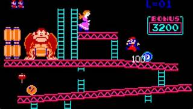El título arcade original que marcó el debut de Donkey Kong, Mario (entonces conocido como Jumpman) y Pauline. La trama es simple y clásica: Donkey Kong, el gorila gigante, secuestra a Pauline y el jugador, como Jumpman, debe escalar vigas y escaleras para alcanzar la cima evitando los barriles que DK arroja. Fue diseñado por Shigeru Miyamoto y se convirtió en un éxito rotundo, siendo fundamental para establecer a Nintendo en el mercado occidental de videojuegos y demostrando el poder de las narrativas simples pero atractivas en el medio.
Donkey Kong Jr. (Arcade / NES, 1982)
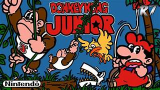En este giro argumental inusual para la época, Mario es ahora el villano que ha capturado a Donkey Kong y lo tiene enjaulado. Donkey Kong Jr. debe subir y balancearse por viñas y cadenas evitando los Snapjaws y otros enemigos lanzados por Mario, en un esfuerzo heroico por encontrar las llaves y liberar a su padre. Este juego amplió las mecánicas de plataformeo, introduciendo movimientos de balanceo más complejos y niveles de desplazamiento vertical, lo que lo diferenció de su predecesor y profundizó la relación entre los personajes de la franquicia.
Donkey Kong Country (SNES, 1994)
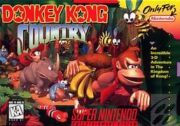La saga principal, desarrollada por Rare, que redefinió los juegos de plataformas 2D. King K. Rool y su ejército de Kremlings roban la masiva reserva de plátanos de Donkey Kong, lo que impulsa la aventura. DK y Diddy Kong viajan a través de la exótica Isla Kong combinando habilidades de rodar, saltar y el innovador sistema de compañero. El juego fue revolucionario por sus gráficos prerenderizados (ACD), que le dieron una apariencia 3D impresionante para la época de la SNES y capturaron la imaginación de millones de jugadores en todo el mundo.
Donkey Kong Land (Game Boy, 1995)
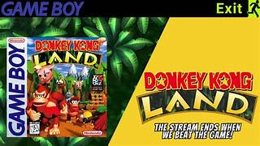Cranky Kong, el viejo y cascarrabias miembro de la familia Kong, lanza un desafío: no cree que DK Country pueda ser igual de exitoso en una consola portátil. DK y Diddy deben viajar a través de niveles completamente rediseñados y adaptados para la Game Boy en blanco y negro para demostrar que la aventura puede ser igual de grande y divertida en un formato más pequeño. Aunque técnicamente limitado, logró replicar la sensación de los gráficos prerenderizados e introdujo melodías memorables, demostrando la viabilidad de las grandes franquicias en el sector portátil.
Donkey Kong Country 2: Diddy's Kong Quest (SNES, 1995)
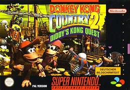En esta aclamada secuela, Donkey Kong es secuestrado por King K. Rool y Diddy Kong asume el rol protagónico, uniéndose a su nueva compañera, la audaz Dixie Kong, para rescatarlo en la peligrosa Isla del Cocodrilo. Dixie introduce una mecánica de flotar con su cabello, lo que no solo mejoró el plataformeo al dar un control aéreo más preciso, sino que también hizo más accesibles zonas de exploración y secretos. El diseño de niveles y la banda sonora oscura y atmosférica lo consolidaron como uno de los mejores juegos de plataformas de la historia.
Donkey Kong Land 2 (Game Boy, 1996)

Esta es la adaptación portátil de Diddy's Kong Quest. Mantiene la trama central del secuestro de DK y sigue a Diddy y Dixie en su aventura en formato Game Boy. Los niveles se ajustaron y rediseñaron cuidadosamente para compensar la pantalla más pequeña y la limitación de colores de la consola, ofreciendo un desafío táctico único. A pesar de las limitaciones de hardware, el juego fue un testimonio de la calidad del diseño de Rare, logrando mantener la esencia de los niveles originales con una jugabilidad fluida y divertida.
Donkey Kong Country 3: Dixie Kong's Double Trouble! (SNES, 1996)

En la tercera entrega, tanto Donkey Kong como Diddy Kong son misteriosamente secuestrados. La protagonista principal es Dixie Kong, acompañada por su primo bebé, Kiddy Kong, que ofrece habilidades de rebotar y lanzar. Juntos viajan al inexplorado Mundo del Norte para investigar y rescatar a los Kongs de K. Rool, quien ahora se hace llamar Barón K. Roolenstein y opera desde una aeronave. El juego innovó con un mapa del mundo más interactivo que permitía usar vehículos y desvelar secretos, añadiendo un elemento de exploración al plataformeo tradicional.
Donkey Kong Land III (Game Boy, 1997)

Sirviendo como adaptación portátil de Dixie Kong's Double Trouble, Dixie y Kiddy Kong continúan la búsqueda de DK y Diddy en el Mundo del Norte. La trama se enfoca en la exploración de un nuevo mundo en la portátil con la jugabilidad centrada en las habilidades de flotar de Dixie y las de rebotar y sumergirse de Kiddy. Fue uno de los últimos juegos desarrollados por Rare para la Game Boy y demostró la maestría del estudio al exprimir el máximo rendimiento del hardware de la consola, ofreciendo una aventura considerable a pesar de las restricciones técnicas.
Donkey Kong 64 (N64, 1999)

King K. Rool intenta destruir la Isla Kong con un rayo láser masivo, y para evitar la interferencia, secuestra a los cuatro amigos de DK (Diddy, Tiny, Lanky y Chunky Kong). DK debe recuperar sus 120 Plátanos Dorados para desbloquearlos y enfrentarse a K. Rool. Es un juego de plataformas 3D de "caja de arena" que requiere usar las habilidades únicas de los cinco Kongs, con niveles masivos llenos de coleccionables. Este juego marcó la transición de la serie a la era 3D y fue notable por la inclusión del infame accesorio Expansion Pak.
Donkey Konga (Nintendo GameCube, 2003)
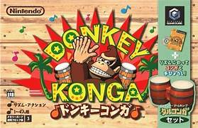Un cambio radical en la franquicia, Donkey Konga es un juego de ritmo desarrollado por Namco. El objetivo es golpear, aplaudir y seguir el compás de la música usando el accesorio Bongo de GameCube, que se vendía junto con el juego. No tiene una trama profunda, centrándose en la diversión de tocar música popular, canciones de videojuegos de Nintendo y melodías propias de la franquicia. Su éxito dio lugar a varias secuelas y demostró la versatilidad de Donkey Kong como personaje principal en diferentes géneros.
DK Jungle Climber (Nintendo DS, 2007)
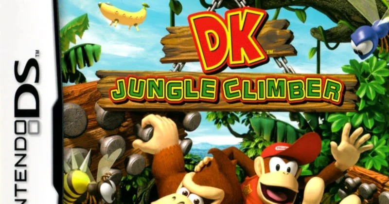Donkey y Diddy Kong descubren un plátano gigante de cristal que los transporta a un mundo alienígena, todo orquestado por King K. Rool, que regresa como villano. El juego, una secuela directa de *DK King of Swing*, utiliza la mecánica central de escalar y balancearse entre pivotes de forma rítmica para avanzar, usando ambas pantallas de la DS para ofrecer un campo de juego expandido. Es un juego de plataformas vertical que destaca por su jugabilidad única y su enfoque en el *timing* preciso.
Donkey Kong Barrel Blast (Wii, 2007)
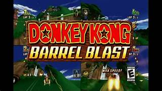Un juego de carreras atípico donde DK y sus amigos usan barriles propulsores para competir. La jugabilidad se basa en el uso de los controles de movimiento del Wii Remote para golpear los barriles imaginarios y ganar velocidad, compitiendo contra la familia Kong y los Kremlings. La trama involucra a Cranky Kong intentando organizar el "Barrel Blast", la carrera más rápida de la jungla. El conflicto se desata cuando los Kremlings (liderados por King K. Rool) interceptan la carrera, y los Kongs deben usar sus habilidades de barril para vencer a los villanos en diversas pistas.
Donkey Kong Country Returns (Wii, 2010)
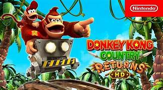La Tribu Tiki Tak, un grupo de criaturas que parecen máscaras tiki, hipnotiza a los animales de la isla y roba la masiva reserva de plátanos de DK. El juego vuelve al plataformeo 2D tradicional, centrándose en el juego cooperativo con mecánicas de rodar y soplar, donde Diddy Kong se monta en la espalda de DK para ayudarlo con su propulsor. Es un reinicio de la saga *Country*, desarrollado por Retro Studios, que mantiene la dificultad y la recolección intensa, rindiendo homenaje a la trilogía original de SNES.
Donkey Kong Country Returns 3D (Nintendo 3DS, 2013)

Es una adaptación de *Donkey Kong Country Returns* para la consola portátil. Mantiene la misma trama (el robo de los plátanos por la Tribu Tiki Tak) y jugabilidad. Sin embargo, agrega un "Modo Nuevo" que reduce la dificultad, dando a DK más vida y permitiéndole comprar más objetos para facilitar la experiencia portátil, lo que lo hizo más accesible para los jugadores ocasionales de la 3DS. También incluye un mundo entero de niveles nuevos que no estaban presentes en la versión original de Wii.
Donkey Kong Country: Tropical Freeze (Wii U / Switch, 2014)
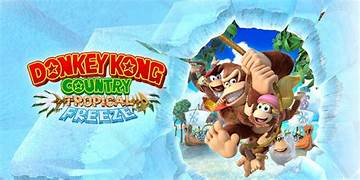Los Snowmads, un grupo de vikingos animales marinos, invaden la Isla Kong con su nave y la congelan. DK, Diddy, Dixie y Cranky Kong viajan por otros mundos temáticos para recuperar su hogar. Dixie y el viejo Cranky Kong se unen como compañeros jugables, añadiendo más variedad al movimiento y al rescate: Dixie puede flotar alto y Cranky puede rebotar con su bastón. Es aclamado por su magnífico diseño de niveles, su banda sonora orquestada y su regreso a la dificultad desafiante clásica de la serie.
Mario vs. Donkey Kong: Tipping Stars (Wii U / 3DS, 2015)
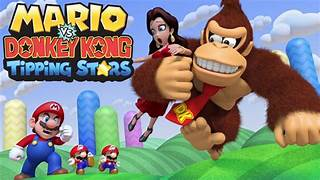Donkey Kong vuelve a su rol de villano secuestrador, aunque de una forma más ligera. El jugador debe guiar a pequeños Mini Marios a través de puzles de plataformas, manipulando el entorno para que las figuras de juguete lleguen a la salida. DK ha secuestrado a Pauline, y Mario debe liberar a los juguetes para que lo ayuden. El juego se centró fuertemente en la creación y el intercambio de niveles creados por los usuarios, uniendo las consolas Wii U y 3DS en una plataforma social de puzles.
Mario vs. Donkey Kong (Switch, 2024)
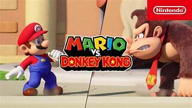Un remake del juego original de Game Boy Advance. La trama se reactiva cuando Donkey Kong, al no poder conseguir un juguete Mini Mario, roba una caja completa de ellos y Mario debe perseguirlo a través de varios mundos temáticos. La jugabilidad es un puzle de plataformas donde se controlan las acciones de Mario y se manipula el entorno (como escaleras y plataformas) para guiar a los Mini Marios de vuelta a sus cajas. Esta versión de Switch añadió nuevas mecánicas de juego cooperativo y más mundos que el original.
Donkey Kong Bananza (Switch 2, 2025)
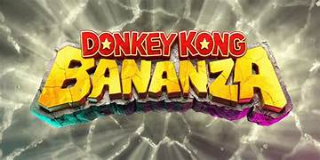Una aventura de plataformas y acción en 3D que representa un ambicioso salto para la franquicia. La trama comienza cuando Donkey Kong se aventura bajo tierra con Pauline para obtener un misterioso objeto que concede deseos oculto en el núcleo del planeta. La jugabilidad es un *sandbox* de plataformas donde se explora un vasto mundo subterráneo. Se utiliza la fuerza de DK para destruir casi cualquier superficie del entorno, abriendo caminos y resolviendo puzles, y se desbloquean transformaciones con habilidades únicas para progresar a través de los diversos biomas subterráneos.